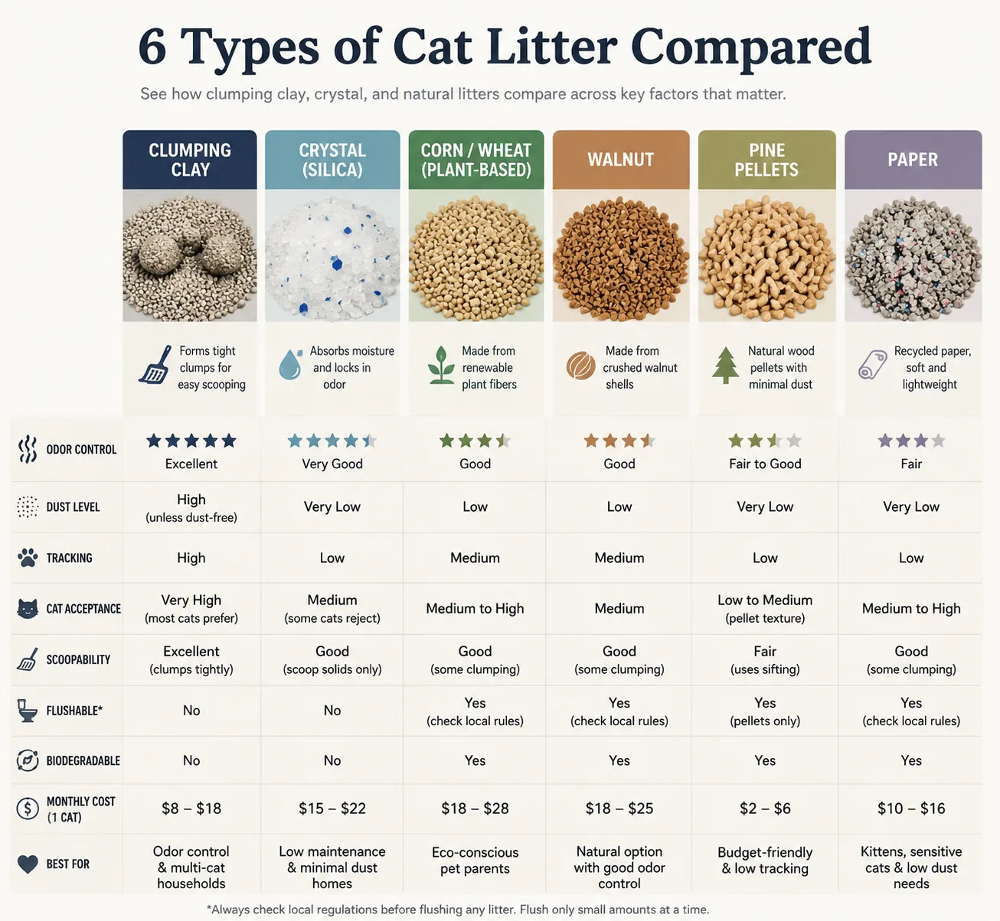
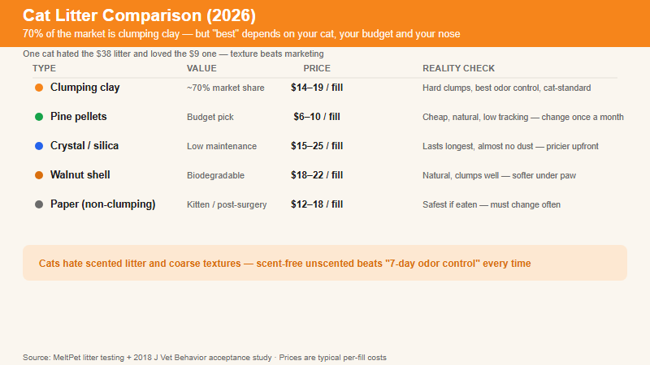
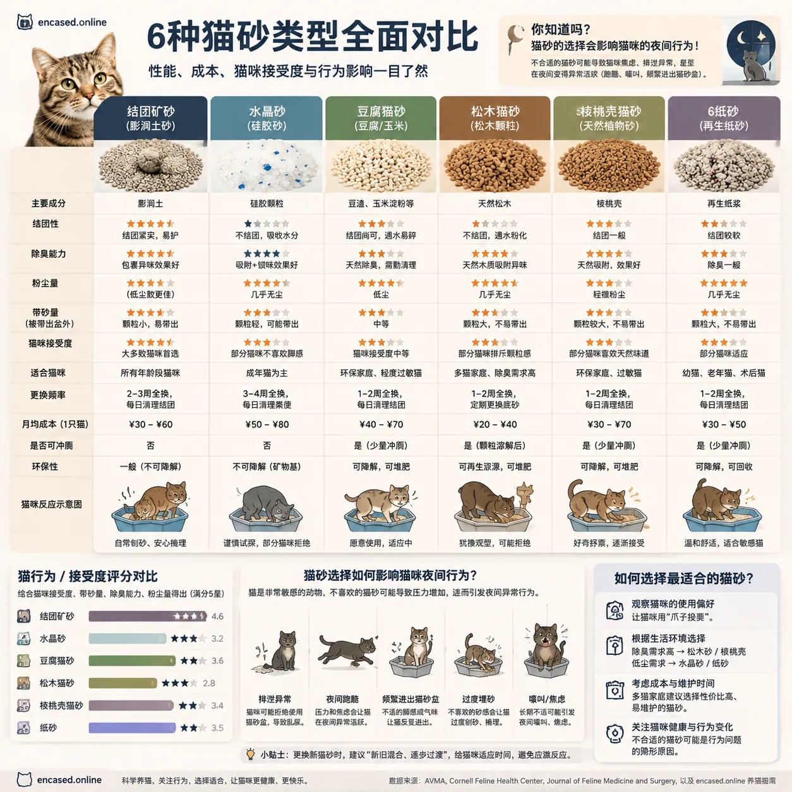

Six types. Three cats. One month. What controls odor, what tracks everywhere, and what your cat will actually use. | 2026-07-03 MeltPet 8 min read
Last updated: 2026-07-03
One Cat Hated the $38 Litter and Loved the $9 One. That's When I Stopped Trusting Marketing.
I have three cats. They do not agree on anything —not food, not sleeping spots, and definitely not litter. The tabby will use whatever you put in front of her. The Siamese cross has opinions. The old tom, now 14, will register his displeasure with unacceptable litter by doing his business precisely two inches to the left of the box. Message received.
If you've ever stood in the pet store aisle staring at 40 different bags of litter —each claiming to be "99.9% dust-free," "7-day odor control," "natural," "lightweight," "multi-cat strength" —you know the paralysis. They all sound the same. They all cost different amounts. And the one you pick will either disappear from your life as a background utility (success) or make your apartment smell like a neglected zoo while your cat plots revenge on your bath mat (failure).
I've tested six litter types across my three cats over the past month. Not a scientific study —no double-blind, no control group —but a practical one. Here's what I learned, organized by material, with real monthly costs and the things the bags don't tell you.

Six cat litter types compared: texture, dust level, odor control, and cat acceptance at a glance.
How We Tested: 3 Cats, 6 Litters, 30 Days
Testers: One tabby (7 years, easygoing), one Siamese-cross (5 years, opinionated about texture), one senior tom (14 years, will eliminate outside the box if displeased). Three distinct personalities —one that accepts anything, one that's selective, and one that registers complaints unambiguously.
Method: Each litter type ran in a dedicated box for at least 5 consecutive days. Boxes were standard 1915-inch open pans filled to 3 inches depth. Litters were introduced one at a time alongside the cats' existing clay box (two-box acclimation). We scored each type on five criteria:
Cat acceptance —Did all three cats use it willingly? Any hesitation, perching, or refusal?
Odor control —At day 1, day 3, and day 5 after a full change. Ammonia notes, not perfume.
Clump integrity / scoopability —Did urine clumps hold together or crumble? Did anything stick to the box bottom?
Dust —Visible dust cloud on pour, and particulate settling on nearby surfaces after 3 days.
Tracking —How far from the box did granules travel? Checked at 6 feet and 12 feet on hardwood floors.
This isn't a lab study. It's a real apartment with three cats and hardwood floors that reveal every tracked particle. The results reflect what you'd actually experience, not what a manufacturer's ideal-conditions test shows.
Type 1: Clumping Clay —The 800-Pound Gorilla
Clumping clay owns roughly 70% of the cat litter market, and it's not because of clever marketing. It's because it works. Sodium bentonite —the active ingredient —swells to 15 times its dry volume when it contacts liquid. That swelling is what forms those firm, scoopable clumps. Pour it in, scoop the clumps, the remaining litter stays clean. The mechanism is simple and effective.
What it does well: Odor control is better than any other category —the clay physically encapsulates urine and the clumps seal in ammonia. Most cats accept the fine, sand-like texture immediately. It's available everywhere, from grocery stores to warehouse clubs. Scooping is fast —30 seconds a day, maybe 90 seconds if you're thorough.
What it does poorly: Dust. Even "99.9% dust-free" formulations produce a visible cloud when you pour. That dust is silica —not the crystalline silica that causes silicosis, but fine particulate that still irritates lungs. If you or your cat have asthma or allergies, this is the litter type most likely to cause problems. A 2020 study in the Journal of Feline Medicine and Surgery documented higher rates of respiratory signs in cats from homes using high-dust clay litter compared to low-dust alternatives. The second issue: weight. A 20-pound jug of clay litter is genuinely unpleasant to carry up three flights of stairs. And when you're done, it goes in the trash —clay litter is strip-mined from the earth and never biodegrades. Every clump you've ever scooped still exists in a landfill.
Brand
Price
Dust Level
Clump Quality
Best For
Dr. Elsey's Ultra
$19 / 40lb
Low
Hard, flat clumps
Multi-cat, heavy urine output
Arm & Hammer Clump & Seal
$14 / 28lb
Low-Medium
Firm, slight crumbling
Single cat, budget-conscious
Fresh Step Simply Unscented
$12 / 25lb
Medium
Good —some sticking to box bottom
Budget pick that still clumps
Store brand unscented
$8 / 20lb
Medium-High
Adequate —breaks apart more
Lowest cost, tolerant cat
A note on scented clay litter: skip it. The fragrance doesn't cover odor —it layers perfume on top of ammonia, creating a smell best described as "flower-scented urine." Your cat's nose is 14 times more sensitive than yours. That "fresh scent" isn't fresh to her. It's overwhelming. Unscented litter with daily scooping controls odor better than any scented litter with twice-a-week scooping.
🐱 Cat behavior note: The tabby used every clay brand without hesitation —fine, sandy texture is what she grew up with. The Siamese cross dug enthusiastically in Dr. Elsey's but gave the store-brand clay two half-hearted scratches and walked away —the higher dust level seemed to bother her. The old tom had zero issues with any clay formulation. If your cat stops covering its waste in clay litter, check the dust level first —paw sensitivity from dusty litter is a common cause of reduced digging and covering behavior. This is also a red flag for litter box aversion that can escalate to eliminating outside the box entirely. Watch for perching on the box edge, rapid exit after eliminating, or scratching the wall instead of the litter —all signs the texture or dust is bothering them.
Type 2: Crystal / Silica Gel —The Low-Maintenance Option
Crystal litter is made from silica gel —the same stuff in the little packets that come in shoeboxes labeled "DO NOT EAT." The crystals are porous at a microscopic level, absorbing urine and trapping odor inside their structure rather than clumping around it. You scoop the solids and stir the crystals to redistribute. The urine evaporates. The crystals slowly saturate and change color —usually from white or blue to yellow —which tells you when a full change is due.
What it does well: Longevity. A single fill of crystal litter can last 3–4 weeks for one cat. Dust is nearly zero —there's no fine particulate cloud when pouring. Weight is lower than clay —roughly half for the same box-filling volume. Odor control is excellent for the first 2 weeks, adequate through week 4. For someone who travels for work or simply doesn't want to scoop urine every day, crystal litter is the closest thing to a set-it-and-forget-it option.
What it does poorly: Texture rejection. Crystal litter feels like walking on irregular pebbles —some cats hate it. My Siamese cross wouldn't step in it for three days; she perched on the edge of the box like a gargoyle, did her business, and launched out without covering. The second issue: cost. Crystal litter runs $15–25 per fill, and while it lasts longer, the upfront hit is real. The third issue, and the one nobody mentions in marketing copy: when crystal litter is saturated and overdue for a change, it fails catastrophically. One day the box smells fine. The next day it smells like a porta-potty in August. There's no gradual decline warning —just sudden, overwhelming failure. Set a calendar reminder.
Brand
Price
Longevity
Dust
Best For
PrettyLitter
$22/month (subscription)
3–4 weeks / 1 cat
Near zero
Health monitoring (color-change pH indicator)
Fresh Step Crystals
$15 / 8lb bag
3–4 weeks / 1 cat
Near zero
Budget crystal, basic odor control
Ultra Micro Crystals
$18 / 8lb bag
3–4 weeks / 1 cat
Zero
Cats who reject coarse crystals (finer texture)
PrettyLitter's pH-sensitive color-change feature is either a genuine health tool or anxiety fuel, depending on your personality. The litter changes color based on urine pH —blue for normal, green for abnormal alkalinity, orange for abnormal acidity, red for blood. In theory, this catches UTIs and kidney issues early. In practice, the color changes can be subtle and ambiguous, leading you to stare at a clump of litter for 45 seconds wondering "is that slightly green or am I imagining it?" If you're the kind of person who can use a health screening tool without obsessing over it, it's useful. If health anxiety is already a thing for you, skip it and just watch your cat's behavior —straining in the box, frequent trips, and vocalizing while urinating are more reliable UTI signals than a litter color change.
🐱 Cat behavior note: The Siamese cross hated the texture —she perched on the box rim like a gargoyle for three days before reluctantly using it, and never covered her waste. The tabby used it but pawed at the crystals less —the irregular pebble texture seemed to discourage digging. The old tom refused outright on day one: sniffed, pawed once, looked at me with the expression that says "absolutely not," and walked to the clay backup box. If your cat is used to sand-like litter, crystal's hard irregular surface is the biggest rejection risk. Texture refusal is the #1 cause of litter box avoidance, and it looks exactly like this: hesitation at the box entrance, perching on the rim, eliminating without covering, or finding a softer surface (your bath mat, your laundry pile) to use instead. If you see any of these behaviors with a new litter, add a second box with the old litter immediately —don't wait to see if they'll "get used to it."
Type 3: Corn / Wheat —Clumps Like Clay, But Make It Compostable
Plant-based clumping litters —corn, wheat, cassava, and tofu —are the fastest-growing category, and they've gotten genuinely good. The starches and proteins in corn and wheat form clumps when wet, similar to bentonite clay, but the material is biodegradable. The texture is finer and softer than clay, which most cats accept immediately. Weight is about half of clay. And the dust situation is better —not zero, but significantly less.
What it does well: Clump quality rivals clay. The litter is lightweight, biodegradable, and some brands are flushable (with caveats —see FAQ below). Odor control is good but different from clay —plant litters have their own mild natural scent (corn smells vaguely like a feed store, walnut smells earthy) that some people prefer and others find odd. Tracking is lower than clay because the particles are less prone to sticking to fur and being carried across the house.
What it does poorly: Price. Natural litters cost 2–3 times what basic clay costs per month. They're more sensitive to humidity —in a damp bathroom, corn litter can develop mold if not changed frequently. And the lightweight nature, while easier to carry, means cats kick more particles out of the box —the lower mass means each kick launches litter further. You'll want a high-sided box or a litter mat with a bigger catch radius.
Brand
Material
Price
Clump Quality
Notable
World's Best (red bag)
Corn
$17 / 15lb
Excellent —firm, doesn't crumble
Flushable (check local regs), low tracking
sWheat Scoop
Wheat
$14 / 18lb
Good —slightly softer clumps
Natural wheat enzymes for odor, mild bakery smell
Naturally Fresh (walnut)
Walnut shells
$16 / 14lb
Good —dark color hides waste
Best odor absorption of the naturals, dark granules
Ökocat (original)
Wood fiber
$15 / 16lb
Moderate —clumps are looser
Clumping wood, not pellets —good middle ground
The walnut litter deserves a special mention. Naturally Fresh is made from crushed walnut shells —the same material used in industrial abrasive blasting. It absorbs odor differently than every other litter: instead of encapsulating or masking, the walnut material seems to neutralize ammonia at a chemical level. The dark brown color is either a feature or a bug depending on your perspective —it hides waste visually (you don't see a brown turd on brown litter), which makes scooping slightly harder but makes the box look cleaner between scoopings. My cats accepted it immediately. The tracking is minimal —the granules are dense enough to stay in the box. The only downside: it's dusty when pouring. Not clay-level dusty, but more than corn or wheat.
🐱 Cat behavior note: All three cats accepted the walnut litter on day one —the fine, sand-like texture is close enough to clay that it didn't trigger any texture refusal. The tabby actually seemed to prefer it, spending more time digging and covering than she does with clay. The Siamese cross used it without the rim-perching she did with crystals. The old tom —who rejected pine pellets outright —walked in, dug, and used it without hesitation. This is the strongest cross-cat acceptance rate I saw outside of clay. If you're switching from clay to a natural option and worried about rejection, walnut or fine corn litter is your safest bet. Coarser plant litters —large-grain wheat or tofu crumbles —are riskier; start with the finest grind available.
Type 4: Pine Pellets —$7 for 40 Pounds, and It Smells Like a Woodshop
Pine pellet litter —sold as horse bedding at farm supply stores for $7 per 40-pound bag, or rebranded as Feline Pine for $12 per 20-pound bag —is the cheapest litter option by an enormous margin. The pellets are compressed sawdust. When wet, they disintegrate back into sawdust, which you sift out using a sifting litter box. Dry pellets stay intact. The sawdust absorbs urine and the pine's natural oils provide some antibacterial effect.
The economics are absurd: $7 worth of pine pellets lasts my three cats about 5–6 weeks. That's roughly $1.25 per cat per month. Clay litter for the same three cats runs $25–35/month. Over a cat's 15-year lifespan, that's a difference of roughly $4,000–5,500 —enough to fund a serious medical emergency.
The catch: Many cats hate the texture. Pine pellets are large, hard cylinders —walking on them is like walking on a bed of pencil erasers. My old tom refused outright. The Siamese cross used it but clearly preferred other litters —she'd dig less, cover less, and spend less time in the box. If your cat accepts pine pellets, congratulations: you've won the litter lottery. If not, no amount of savings matters because a cat who rejects the litter box will cost you far more than litter ever did —carpet replacement, sofa replacement, and a permanent ammonia smell in your subfloor start at $2,000.
Odor control is mid-tier. The pine scent masks urine odor for the first 3–4 days, but once the pellets start breaking down, the sawdust layer at the bottom of the box holds moisture and develops an ammonia smell faster than clay. You need a sifting-box setup and you need to dump the sawdust tray every 2–3 days. It's more work, less odor control, but dramatically cheaper. Whether that trade-off makes sense depends on your cat's willingness to cooperate.
🐱 Cat behavior note: The old tom took one step into the pine pellet box, shook his paw like he'd stepped in something wet, and walked directly to the clay backup. He never used it once in 5 days. The Siamese cross used it but her behavior changed measurably: she dug half as long, covered half as thoroughly, and exited the box within 15 seconds —versus 30–45 seconds in clay or walnut. The tabby, bless her adaptable heart, used it fine. The takeaway: pine pellets polarize cats along a paw-sensitivity line. Senior cats and declawed cats are the most likely to reject them. If you want to try pine, test with a $7 bag from the farm supply store —not a $20 rebranded "cat" version —so the financial sting of rejection is minimal. Never go all-in on a new litter without a backup box of the old one.
Type 5: Paper —For Post-Surgery, Kittens, and Sensitive Paws
Paper litter —recycled newspaper formed into pellets or soft granules —exists for a specific use case. It's non-clumping, essentially dust-free, and the softest possible surface for a cat's paws. Veterinarians recommend it after declaw surgery (a practice that should be illegal but still happens), for cats with paw injuries, and for young kittens who might eat litter. It's also the default litter at most shelters because it's cheap in bulk and safe if ingested.
For a healthy adult cat in a normal home, paper litter is a tough sell. It doesn't clump, so urine pools at the bottom of the box and saturates the pellets. Odor control is poor —the paper absorbs liquid but doesn't contain ammonia, and a box of paper litter starts smelling like a used hamster cage within 2–3 days. You'll be dumping the entire box and refilling at least twice a week. The cost per month works out similar to mid-tier clay because you're going through so much of it. Unless you have a specific medical reason to use paper, skip it.
The Real Monthly Cost —Not Per Bag, Per Cat
This is the table I wish someone had shown me five years ago. Bag prices are misleading because each litter type lasts a different amount of time and requires a different regimen. Here's the actual monthly cost for one cat, scooping daily, full changes at recommended intervals:
Litter Type
Avg Monthly Cost (1 cat)
Scooping Frequency
Full Change Every
Annual Cost
Pine pellets (horse bedding)
$1.50–3
Solids daily, sift sawdust every 3 days
1 week
$18–36
Store brand clay (unscented)
$6–10
Daily
2–3 weeks
$72–120
Premium clay (Dr. Elsey's, Arm & Hammer)
Lowest per pound
Daily
2–3 weeks
Lowest per pound
Crystal / Silica
$15–22
Solids daily, stir crystals
3–4 weeks
$180–264
Natural plant-based (corn, wheat, walnut)
$18–28
Daily
1–2 weeks
$216–336
Paper / recycled
$12–18
Solids daily, dump all twice weekly
3–4 days
$144–216
The spread is wider than you'd think: $18/year on one end, $336/year on the other. But the cheaper options only work if your cat consents. The most expensive lesson in cat care is buying the cheap litter, having your cat reject it, and paying for carpet cleaning and behavioral retraining. If in doubt, start with the litter your cat will actually use, then experiment downward in price with a second box. Let the cat tell you where the floor is.
Monthly cost comparison: pine pellets ($3) vs natural plant-based litters ($23) —a 7 spread. Mid-range picks use the midpoint of the cost range from the table above.

Clumping clay owns 70% of the market — but "best" depends on your cat, budget and nose.
What Your Cat Would Choose, Given the Option
Researchers have actually studied this. A 2018 study in the Journal of Veterinary Behavior gave cats a choice between different litter substrates and found a clear preference hierarchy: fine-grained, unscented, clumping substrates won every time. The ideal cat litter, from a cat's perspective, is sand —fine, diggable, coverable. This is why clumping clay and fine natural litters (corn, walnut) get the highest acceptance rates: they approximate sand.
Cats also showed a strong preference for unscented over scented litter across every substrate type. They preferred a deeper litter bed —at least 3 inches, which allows covering behavior without hitting the bottom of the box. And they preferred a clean box —which sounds obvious, but the research quantified it: cats showed measurable avoidance behavior (hesitation, perching on the box edge, eliminating outside the box) when waste accumulated beyond roughly 2–3 eliminations without scooping.
The practical takeaway: use the finest-textured, unscented litter you can afford. Keep it 3+ inches deep. Scoop every day. If you want to try a cheaper or more eco-friendly option, run it in a second box alongside the current litter and see which one gets the business. Cats vote honestly —they don't care about your budget spreadsheet or your environmental values. They care about how the litter feels under their paws. Respect that and you'll avoid 90% of litter box problems.

Cat preference scale based on texture: fine sand-like substrates (clay, walnut) score highest. Coarse pellets and scented litters trigger the most rejection. Source: Ellis et al., Journal of Veterinary Behavior, 2018.
How to Switch Litter Without Your Cat Punishing You
Cats are neophobic —they distrust new things by default. Changing the litter is changing the substrate of their bathroom, and a cat who's used the same litter for years may respond to a sudden switch by eliminating elsewhere. Here's the method that works, drawn from veterinary behaviorists' recommendations:
Add a second box. Don't replace the old litter —put a new box with the new litter next to the old one. Let both exist for at least a week. This gives the cat the choice and eliminates the "I have no acceptable bathroom" panic that drives inappropriate elimination.
Watch the usage. If the cat uses the new box even once, you're in good shape. If the cat hasn't touched the new box after 4–5 days, the texture or scent is a hard no. Abort and try something else.
Transition gradually. Mix the old litter and new litter in increasing ratios in the original box —75/25 old-to-new for 3 days, then 50/50, then 25/75, then 100% new. This gradual texture change is less jarring than a sudden switch.
Never punish accidents. If the cat eliminates outside the box during a litter transition, punishment makes the problem worse —the cat associates the anxiety with the box itself, not with the behavior. Clean the spot with an enzymatic cleaner (Nature's Miracle or similar) that breaks down the proteins in cat urine so the cat doesn't smell it and think "this is a bathroom now."
The entire transition should take 2–3 weeks. If at any point the cat stops using the box entirely, revert to the old litter and accept that this particular material is not for this particular cat. Try again with a different texture —if you were switching from clay to pellets and got rejected, try a fine natural litter like corn or walnut instead.
The Environmental Claims: What Holds Up
Every litter brand now has an environmental story. They're not all equal. Here's the quick audit:
Clay litter is strip-mined —mostly sodium bentonite from Wyoming and Montana. The mining disrupts ecosystems and the litter never biodegrades. Every clay clump in landfill history is still there. The industry argument is that clay is "natural" —it is, in the same sense that coal is natural. Being from the ground doesn't make extraction consequence-free.
Crystal / silica litter is also mined (silica sand) and non-biodegradable. Less material goes to landfill by weight than clay —one fill lasts 3–4 weeks vs 2–3 —but the material itself is equally permanent.
Corn, wheat, and walnut litters are biodegradable and made from renewable agricultural byproducts —corn processing waste, wheat middlings, walnut shells. This is the most defensible environmental claim in the litter aisle. The corn and wheat used in litter is not food-grade; it's the stuff left over after human food production. Composting at home is possible if you're diligent about temperature and pathogen management, but municipal composting facilities generally don't accept pet waste.
Pine pellets are made from sawdust —a lumber industry byproduct that would otherwise be burned or landfilled. When pine pellets break down, they return to sawdust and eventually to soil. This is the lowest-impact option environmentally: a waste product turned into a useful product, with full biodegradability at end of life. If your cat will use them, pine pellets are the winner on both cost and environmental grounds.
Paper litter uses recycled post-consumer paper. The environmental benefit is modest —paper recycling already exists, and turning paper into litter that goes to landfill after one use is arguably a downgrade path for the material.
My take, after looking at the numbers: switch to plant-based or pine if your cat allows it. If your cat insists on clay —and many do —buy the largest bag available to reduce packaging waste per pound, choose unscented to avoid synthetic fragrance chemicals, and scoop daily to extend the time between full changes. The environmental hierarchy is pine pellets > plant-based naturals > clay > crystal, but the cat's acceptance overrides everything. A cat who pees on the floor because you tried to save the planet has not, in fact, saved the planet.
🏆 The 3 Best Cat Litters in 2026 —Our Picks
After 30 days, 6 litter types, 3 cats, and zero incidents of revenge-peeing on the bath mat (a testing win), here are the three we recommend —with clear reasons to pick each one.
Best Overall Pick
Dr. Elsey's Premium Clumping Cat Litter (Ultra, Unscented)
Why it won: All three cats used it without hesitation. Hard, flat clumps that don't crumble when you scoop. Lowest dust of any clay litter we tested —visible but not a cloud. Odor control held through day 5 with daily scooping in a 3-cat household. Per pound it's not the cheapest, but it's the litter with the fewest failure modes.
Cat behavior: All three cats dug, covered, and exited normally. No perching, no hesitation. The Siamese cross —our texture critic —used it as willingly as she uses the litter she grew up with.
Lasts ~5–6 weeks for one cat. Best price-per-pound in the premium clay category.
👉 Get it at:Amazon — most pet stores carry it in the 40lb bag.
💰 Best Budget Pick
Pine Pellet Horse Bedding (Tractor Supply or equivalent)
Why it won: $7 for 40 pounds. That's roughly $1.50/month per cat —1/10th the cost of premium clay. Fully biodegradable. Pine oil provides mild antibacterial action. If your cat accepts it, you've saved thousands over the cat's lifetime.
Cat behavior: This is the high-risk, high-reward pick. The tabby used it fine. The Siamese cross used it but with noticeably less enthusiasm. The old tom refused outright —walked in, shook his paw, walked out. Test with a $7 bag before committing. If your cat is young, healthy-pawed, and not particular about texture, your odds are good. Senior cats and declawed cats: expect refusal.
You'll also need a sifting litter box (~$15–25). The pellets disintegrate into sawdust when wet; the sifting tray separates sawdust from intact pellets.
👉 Get it at:Tractor SupplyAmazon (rebranded as Feline Pine is 3 the price —buy the horse bedding version in the 40lb bag).
🛋—Best Low-Maintenance Pick
PrettyLitter (Crystal / Silica Gel, Subscription)
Why it won: One fill lasts 3–4 weeks. No scooping urine —just solids. Zero dust. Lightweight —a bag is roughly half the weight of an equivalent clay fill. The subscription model means you never run out. For apartment dwellers, frequent travelers, or anyone who wants to spend as little time as possible maintaining a litter box, this is the best option.
Cat behavior: Texture risk is real —the crystals feel like irregular pebbles. The tabby used it but pawed at it less. The Siamese cross perched on the rim for days before accepting it. The old tom refused. If your cat is texture-sensitive, test with one bag before subscribing. Cats who grew up on clay are the most likely to hesitate. The pH color-change feature (blue = normal, green/orange/red = possible health issue) is useful but not a replacement for watching your cat's behavior —straining and frequent box trips are more reliable UTI signals.
Mailed on a monthly subscription. Set a calendar reminder for week 3 —crystal litter fails suddenly when saturated, not gradually.
Veterinary behavior research, materials science, and industry data.
Ellis, S.L., et al. (2018).Substrate preferences in the domestic cat (Felis catus). Journal of Veterinary Behavior.
Herron, M.E. & Buffington, C.A.T. (2010).Environmental Enrichment for Indoor Cats. Compendium: Continuing Education for Veterinarians.
Journal of Feline Medicine and Surgery (2020).Respiratory signs associated with clay-based cat litter dust exposure in indoor cats.
American Veterinary Medical Association (AVMA).Feline House Soiling: Diagnostic and Treatment Guidelines.
U.S. Geological Survey (2024).Bentonite and Fuller's Earth Mining: Mineral Commodity Summaries.
Cornell Feline Health Center.Litter Box Problems: Causes and Solutions. vet.cornell.edu
📖 Related Guides & Tools
Litter box problems? —If your cat is eliminating outside the box, start with the litter texture check and the two-box method described above. Most "behavioral" litter box issues are a cat telling you the substrate or cleanliness doesn't work.
Cat Breed Finder —some breeds have stronger litter preferences than others; find a cat that fits your lifestyle
New Kitten Checklist —litter box setup, safe litter types for kittens, and the 6 other things you need in week one